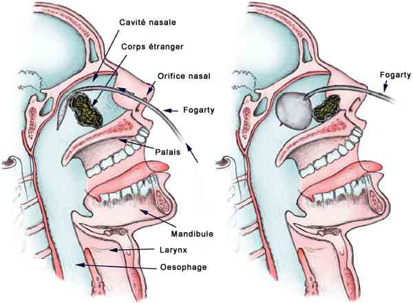

Bienvenue Sur Medical Education
Corps étranger intra-nasal
Spécialité : orl / pédiatrie / traumatologie /
Points importants
-
Terrain particulier chez l'adulte (pathologie psychiatrique, retard mental)
-
Gravité en cas d'atteinte des VAS (par déplacement postérieur)
-
Morbi-mortalité en rapport avec les complications aiguës et à moyen terme
-
Traitement = extraction par l'ORL
Présentation clinique / CIMU
CONTEXTE
Présentation clinique / CIMU
CONTEXTE
Terrain
- Sexe ratio (58% hommes)
Antécédents
- Terrain psychiatrique, retard mental
- Irritation nasale préexistante
Traitement
- Au long cours = psychotropes
Circonstances de survenue
- Intentionnelle
- Accidentelle
Facteurs déclenchants
- Décompensation état psychiatrique
SIGNES FONCTIONNELS
Spécifiques
- Ecoulement unilatéral nasal
- Inconfort unilatéral nasal
Non spécifiques
- Eternuement
En rapport avec une complication
- Epistaxis
- Douleur maxillaire (sinusite)
- Otalgie (otite moyenne aiguë)
- Inflammation cutanée périorbitaire (cellulite périorbitaire)
- Détresse respiratoire inspiratoire - stridor/wheezing (épiglottite)
- Trouble de la conscience ± céphalées fébriles avec signes de localisation (méningo-encéphalite)
Signes d'étiologies
- Corps étranger organique = signes irritatifs précoces - épistaxis
- Corps étranger inorganique = inconfort
EXAMEN CLINIQUE
Signes spécifiques
- Examen cavité nasale avec la coopération du patient
- Position = assise « tête en l'air »
- Pour l'ORL, miroir de Clave, spéculum nasal
Recherche de complications
- Evaluation conscience
-
Evaluation de la fonction respiratoire :
- respiration nasale
- dyspnée inspiratoire - stridor/wheezing
- anomalie auscultatoire
- Etat hémodynamique
-
Examen de la face :
- épistaxis
- douleur reproduite à la palpation du sinus maxillaire
- inflammation périorbitaire
-
Examen par otoscope :
- perforation de la cloison nasale
- tympan - autre corps étranger intra-auriculaire
-
Examen buccal :
- écoulement postérieur
Signes d'étiologies
- Corps étranger organique = risque de dislocation (complications)
- Corps étranger inorganique
Lié au terrain
- Décompensation de terrain psychiatrique
- Agitation
EXAMENS PARACLINIQUES SIMPLES
-
En cas de complication :
- détresse respiratoire, SpO2 (hypoxémie) - FR
CIMU
- Situation A = corps étranger non compliqué : tri 3-4
- Situation B = corps étranger compliqué : tri 2
Signes paracliniques
BIOLOGIQUE
-
Pas de biologie recommandée en cas de corps étranger intra-nasal isolé
IMAGERIE
-
En cas d'objet métallique ou à tonalité calcique, radiographies incidence Blondeau face et profil
Diagnostic étiologique
-
Corps étranger organique :
-
alimentation, bois
-
Corps étranger inorganique :
-
métallique, plastique
Diagnostic différentiel
-
Epistaxis
-
Sinusite
-
Rhinite allergique, virale
-
Polypose nasale
-
Tumeur
-
Infections des VAS : (rhino)pharyngite
-
Atrésie unilatérale choanes
Traitement
-
Recours ORL
STABILISATION INITIALE
Diagnostic étiologique
-
Corps étranger organique :
- alimentation, bois
-
Corps étranger inorganique :
- métallique, plastique
Diagnostic différentiel
-
Epistaxis
-
Sinusite
-
Rhinite allergique, virale
-
Polypose nasale
-
Tumeur
-
Infections des VAS : (rhino)pharyngite
-
Atrésie unilatérale choanes
Traitement
-
Recours ORL
STABILISATION INITIALE
Traitement
- Recours ORL
STABILISATION INITIALE
Situations A/B
-
Prémédication = anesthésie et vasoconstricteur local :
- application locale = 1% lidocaïne (sans adrénaline) et 0,5% phényléphrine
- en cas d'anxiété, application locale 1 à 2 mL 1/1000 d'adrénaline
- ± antalgiques pallier I ou II
- ± sédatifs en fonction du terrain en cas d'agitation
-
Différentes techniques :
-
par médecin urgentiste :
- instrumentation directe (corps étranger non sphérique, non friable) = pinces
-
nécessitant un recours ORL :
-
cathéter-ballon type Fogarty (corps étranger de petite taille, arrondi)
-  _270 Cathéter-ballon type Fogarty
- pression positive (corps étranger de grande taille, occlusif) - risque de barotraumatisme tympanique et pulmonaire :
-
cathéter-ballon type Fogarty (corps étranger de petite taille, arrondi)
- occlusion nasale controlatérale saine, réalisation de la manoeuvre de Valsalva
- occlusion nasale controlatérale saine, pression insufflée par la cavité buccale par une tierce personne (chez enfant, tierce personne = mère)
- haut débit d'oxygène (10 à 15 L/min) dans la narine saine
- aspiration (corps étranger sphérique, lisse)
- colle (corps étranger sphérique, lisse, non friable) = application directe sur le corps étranger d'un applicateur enduit de colle adhésive en cryanoacrylate
- déplacement postérieur - rare (en cas d'occlusion oesophagienne) - nécessité d'AG - patient intubé/ventilé
- aimant (corps étranger métallique)
- irrigation - indication controversée (risque suffocation)
-
par médecin urgentiste :
Situation B (compliqué)
-
Gestion de la complication en premier lieu :
- épistaxis
-
Gestion secondaire de la complication :
- sinusite
- otite moyenne aiguë (OMA)
- cellulite péri-orbitaire
- épiglottite
- méningo-encéphalite
SUIVI DU TRAITEMENT
- Surveillance locale (épistaxis réactionnelle)
- Complications potentielles (en particulier barotraumatisme = pulmonaire, tympanique)
Surveillance
CLINIQUE
-
Douleur
-
Ecoulement
-
Epistaxis
PARACLINIQUE
-
Pas de surveillance
Devenir / orientation
-
Situation A = corps étranger non compliqué
-
Situation B = corps étranger compliqué
CRITERES D'ADMISSION
-
Certaines situations dans situation B (compliqué) :
-
cellulite périorbitaire
-
épiglottite
-
méningo-encéphalite
CRITERES DE SORTIE
-
Autres = épistaxis, OMA, sinusite (situation B = compliqué)
-
Situation A (non compliqué) :
-
extraction du corps étranger
-
recours avis psychiatrique en cas de décompensation
ORDONNANCES DE SORTIE
-
Antalgiques pallier I si besoin
-
± mèches hémostatiques (alginate de calcium) en cas de risque d'épistaxis secondaire
RECOMMANDATIONS DE SORTIE
-
Pas de suivi ORL recommandé :
-
en dehors de la situation B (consultation à 48-72h)
-
et/ou apparition de signes aigus (épistaxis) pour la situation A
-
Eviter la prise d'aspirine, d'AINS en cas d'épistaxis
-
Pas de mouchage énergique
-
Interdiction de produit en instillation nasale
-
Surveillance apparition à distance de :
-
fièvre
-
douleur maxillaire
-
otalgie
-
inflammation de la face et du cou
-
céphalées
Mécanisme / description
-
Dommage direct de la cavité nasale et des structures adjacentes
-
Inflammation locale avec oedème à l'origine d'une obstruction du drainage sinusien et secondairement sinusite
-
Ulcération et érosion des vaisseaux sanguins à l'origine d'un épistaxis
-
Possibilité de déplacement postérieur du corps étranger vers les VAS
-
Au long cours, en cas d'impaction ou absence d'extraction, possibilité de formation d'un rhinolithe par agrégation par calcium, magnésium, phosphate ou carbonate
Bibliographie
-
Jonathan Fischer, Foreign Bodies, Nose, 2008, www.emedicine.com
Devenir / orientation
- Situation A = corps étranger non compliqué
- Situation B = corps étranger compliqué
CRITERES D'ADMISSION
-
Certaines situations dans situation B (compliqué) :
- cellulite périorbitaire
- épiglottite
- méningo-encéphalite
CRITERES DE SORTIE
- Autres = épistaxis, OMA, sinusite (situation B = compliqué)
-
Situation A (non compliqué) :
- extraction du corps étranger
- recours avis psychiatrique en cas de décompensation
ORDONNANCES DE SORTIE
- Antalgiques pallier I si besoin
- ± mèches hémostatiques (alginate de calcium) en cas de risque d'épistaxis secondaire
RECOMMANDATIONS DE SORTIE
-
Pas de suivi ORL recommandé :
- en dehors de la situation B (consultation à 48-72h)
- et/ou apparition de signes aigus (épistaxis) pour la situation A
- Eviter la prise d'aspirine, d'AINS en cas d'épistaxis
- Pas de mouchage énergique
- Interdiction de produit en instillation nasale
-
Surveillance apparition à distance de :
- fièvre
- douleur maxillaire
- otalgie
- inflammation de la face et du cou
- céphalées
Mécanisme / description
-
Dommage direct de la cavité nasale et des structures adjacentes
-
Inflammation locale avec oedème à l'origine d'une obstruction du drainage sinusien et secondairement sinusite
-
Ulcération et érosion des vaisseaux sanguins à l'origine d'un épistaxis
-
Possibilité de déplacement postérieur du corps étranger vers les VAS
-
Au long cours, en cas d'impaction ou absence d'extraction, possibilité de formation d'un rhinolithe par agrégation par calcium, magnésium, phosphate ou carbonate
Bibliographie
-
Jonathan Fischer, Foreign Bodies, Nose, 2008, www.emedicine.com
Bibliographie
-
Jonathan Fischer, Foreign Bodies, Nose, 2008, www.emedicine.com
Auteur(s) : Albéric GAYET